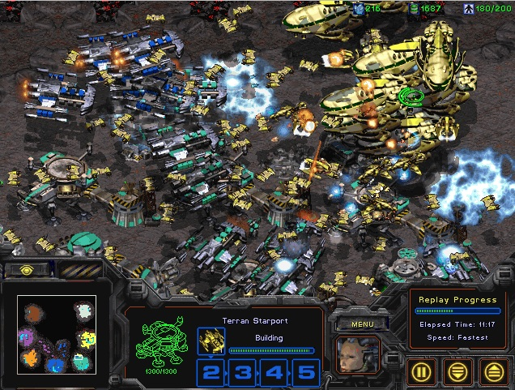
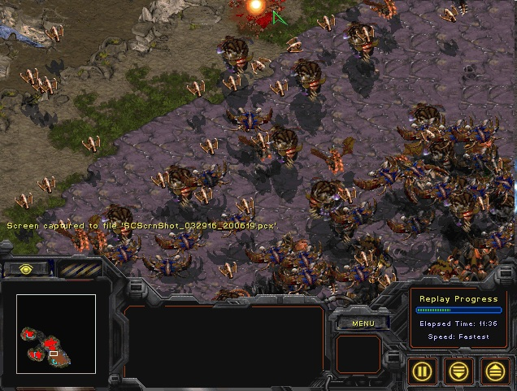
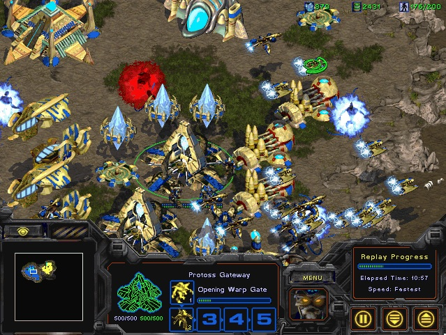
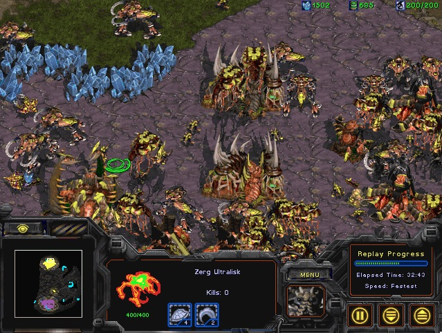

|
资源共享
|
资源1：starcraft I变态电脑版 说明文档地址：starcraft I变态电脑版文档 starcraft I是一款经久不衰的经典即时战略游戏，独特的紧张节奏和多样的战术组合构成了starcraft紧张多变的战局，然而，starcraft有一个不足，电脑AI智商太低了，因此我们在和电脑打的时候经常会感觉到无聊。去年，我经过潜心的研究，修改了星际争霸I的电脑AI脚本文件，极大地增强了电脑的水平，使得原先无比弱鸡的电脑变得异常的强大！     密集恐惧症慎入！ 在原版电脑AI里，电脑不会暴这么多兵的，然而在我的修改版里，一切皆有可能，神族拥有强大的圣堂武士和黄金舰队，快攻稳准狠，人族拥有强大的陆地部队，虫族厚积薄发，一旦出击，势在必得，AI适合于各种地图（为了增加游戏难度，我突破了原先星际争霸I的3攻3防），另外这是星际争霸1.16非阉割版本，拥有完整的战役和过场动画、音效。 你信或者不信，黄旭东与你同在！ |